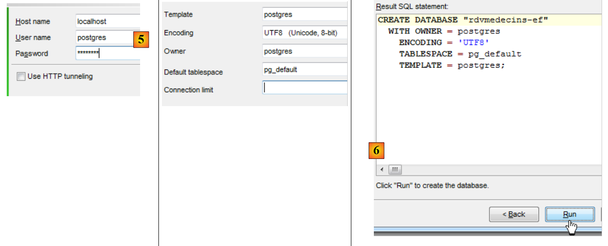
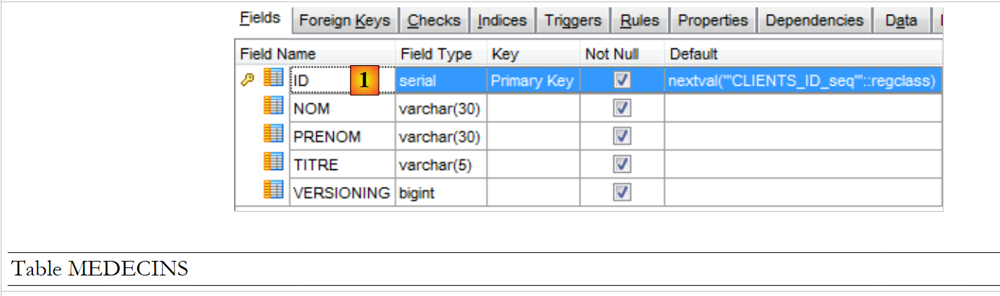
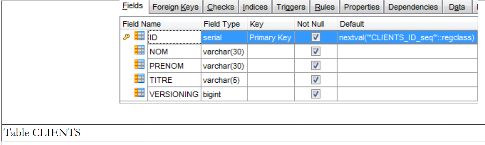
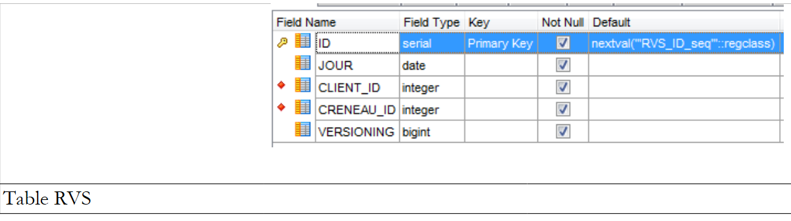
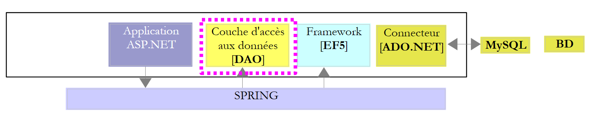
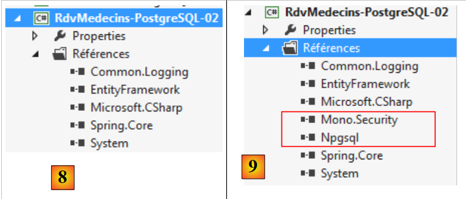
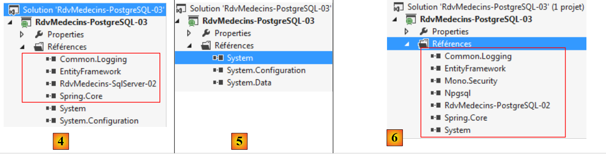

6. Caso di studio con PostgreSQL 9.2.1
6.1. Installazione degli strumenti
Gli strumenti da installare sono i seguenti:
- SGBD: [http://www.enterprisedb.com/products-services-training/pgdownload#windows];
- uno strumento di amministrazione: EMS SQL Manager per PostgreSQL Freeware [http://www.sqlmanager.net/fr/products/postgresql/manager/download].
Negli esempi che seguono, l'utente postgres ha come password postgres.
Avviamo PostgreSQL e poi lo strumento [SQL Manager Lite for PostgreSQL] con cui gestiremo SGBD.
 |
- in [1], avviamo SGBD e PostgreSQL dai servizi di Windows;
- in [2], il servizio viene avviato;
Ora avviamo lo strumento [SQL Manager Lite for MySQL] con cui gestiremo SGBD e [3].
 |
- in [4], creiamo un nuovo database;
- in [5], si specifica il nome del database;
 |
- in [5], ci si connette come postgres / postgres;
- in [6], si inseriscono alcune informazioni;
- in [7], si conferma l'ordine SQL che verrà eseguito;
 |
- in [8], il database è stato creato. Ora deve essere registrato in [EMS Manager]. Le informazioni sono corrette. Si esegue [OK];
- in [9], ci si connette;
- in [10], [EMS Manager] visualizza il database, per ora vuoto. Si noti che le tabelle apparterranno a uno schema denominato public [11].
Ora collegheremo un progetto VS 2012 a questo database.
6.2. Creazione del database a partire dalle entità
Iniziamo duplicando la cartella del progetto [RdvMedecins-SqlServer-01] in [RdvMedecins-PostgreSQL-01] e [1]:
 |
- in [2]; in VS 2012, eliminiamo il progetto [RdvMedecins-SqlServer-01] dalla soluzione;
 |
- in [3], il progetto è stato rimosso;
- in [4], ne aggiungiamo un altro. Questo è contenuto nella cartella [RdvMedecins-PostgreSQL-01] che abbiamo creato in precedenza;
 |
- in [5], il progetto caricato si chiama [RdvMedecins-SqlServer-01];
- in [6], ne modifichiamo il nome in [RdvMedecins-PostgreSQL-01];
 |
- in [7], si aggiunge un altro progetto alla soluzione. Questo è contenuto nella cartella [RdvMedecins-SqlServer-01] del progetto che abbiamo eliminato dalla soluzione in precedenza;
- in [8], il progetto [RdvMedecins-SqlServer-01] è stato reinserito nella soluzione.
Il progetto [RdvMedecins-PostgreSQL-01] è identico al progetto [RdvMedecins-SqlServer-01]. Dobbiamo apportare alcune modifiche. In [App.config], modificheremo la stringa di connessione e il progetto [DbProviderFactory], che dovrà essere adattato a ciascun progetto SGBD.
<!-- stringa di connessione al database -->
<connectionStrings>
<add name="monContexte" connectionString="Server=127.0.0.1;Port=5432;Database=rdvmedecins-ef;User Id=postgres;Password=postgres;" providerName="Npgsql" />
</connectionStrings>
<!-- il provider factory -->
<system.data>
<DbProviderFactories>
<add name="Npgsql Data Provider" invariant="Npgsql" support="FF" description=".Net Framework Data Provider for Postgresql Server" type="Npgsql.NpgsqlFactory, Npgsql, Version=2.0.11.0, Culture=neutral, PublicKeyToken=5d8b90d52f46fda7" />
</DbProviderFactories>
</system.data>
- riga 3: l’utente e la sua password;
- righe 7-9: il DbProviderFactory. La riga 8 fa riferimento a un DLL [Npgsql] che non abbiamo. Lo si ottiene con NuGet [1]:
 |
- in [2], nella casella di ricerca si digita la parola chiave postgresql;
- in [3], si seleziona il pacchetto [Npgsql]. Si tratta di un connettore ADO.NET per PostgreSQL;
 |
- in [4] sono stati aggiunti due riferimenti;
- in [5], in [App.config], è necessario inserire la versione corretta di DLL. La si trova nelle sue proprietà.
Nel file [Entites.cs], è necessario adattare lo schema delle tabelle che verranno generate:
[Table("MEDECINS", Schema = "public")]
public class Medecin : Personne
{...}
[Table("CLIENTS", Schema = "public")]
public class Client : Personne
{...}
[Table("CRENEAUX", Schema = "public")]
public class Creneau
{...}
[Table("RVS", Schema = "public")]
public class Rv
{...}
Abbiamo visto in precedenza, durante la creazione di una base dati PostgreSQL, che le tabelle appartenevano a uno schema denominato "public".
Configuriamo l’esecuzione del progetto:
 |
- in [1], assegniamo un altro nome all’assembly che verrà generato;
- in [2], si assegna anche un altro spazio dei nomi predefinito;
- in [3], si indica il programma da eseguire.
A questo punto non ci sono errori di compilazione. Eseguiamo il programma [CreateDB_01]. Si ottiene la seguente eccezione:
Ricordiamo di aver riscontrato lo stesso errore con MySQL e Oracle. È legato al tipo del campo Timestamp delle entità. Applichiamo la stessa modifica utilizzata con Oracle. Nelle entità, sostituiamo le tre righe
[Column("TIMESTAMP")]
[Timestamp]
public byte[] Timestamp { get; set; }
con le seguenti:
[ConcurrencyCheck]
[Column("VERSIONING")]
public int? Versioning { get; set; }
Modifichiamo il tipo della colonna da byte[] a int?. Nel SGBD, utilizzeremo delle procedure memorizzate per incrementare questo intero di un'unità ogni volta che verrà inserita o modificata una riga.
Applichiamo la modifica precedente alle quattro entità, quindi rieseguiamo l’applicazione. A questo punto otteniamo il seguente errore:
La riga 1 indica che il connettore ADO.NET di PostgreSQL non è in grado di eliminare il database esistente. Esattamente come con Oracle. Siamo quindi costretti a creare manualmente il database [RDVMEDECINS-EF] con lo strumento [EMS Manager for PostgreSQL]. Non descriviamo tutte le fasi, ma solo quelle più importanti.
Il database PostgreSQL sarà il seguente:
Le tabelle
 |
- in [1], ID è la chiave primaria di tipo serial. Questo tipo PostgreSQL è un numero intero generato automaticamente dal SGBD.
 |
 |
 |
 |
Le diverse tabelle presentano le chiavi primarie e esterne che queste stesse tabelle avevano negli esempi precedenti. Le chiavi esterne hanno l'attributo ON DELETE CASCADE.
Le sequenze
Come in Oracle, anche qui abbiamo creato delle sequenze. Si tratta di generatori di numeri consecutivi. Ce ne sono 5: [1].
 |
- in [2], vediamo le proprietà della sequenza [CLIENTS_ID_SEQ]. Essa genera numeri consecutivi con incrementi di 1, a partire da 1 fino a un valore molto elevato.
Tutte le sequenze sono costruite secondo lo stesso modello.
- [CLIENTS_ID_seq] verrà utilizzata per generare la chiave primaria della tabella [CLIENTS];
- [MEDECINS_ID_seq] sarà utilizzata per generare la chiave primaria della tabella [MEDECINS];
- [CRENEAUX_ID_seq] verrà utilizzata per generare la chiave primaria della tabella [CRENEAUX];
- [RVS_ID_seq] verrà utilizzata per generare la chiave primaria della tabella [RVS];
- [sequence_versions] verrà utilizzata per generare i valori delle colonne [VERSIONING] di tutte le tabelle.
I trigger
Un trigger è una procedura eseguita da SGBD prima o dopo un evento (Inserimento, Modifica, Cancellazione) in una tabella. Ne abbiamo 4 [1]:
 |
Diamo un'occhiata al codice DDL del trigger [CLIENTS_tr] che popola la colonna [VERSIONING] della tabella [CLIENTS]:
- righe 1-3: prima di ogni operazione INSERT o UPDATE sulla tabella [CLIENTS];
- riga 4: viene eseguita la procedura [public.trigger_versions()].
La procedura [public.trigger_versions()] è la seguente:
- riga 2: NEW rappresenta la riga che verrà inserita o modificata. NEW. "VERSIONING" è la colonna [VERSIONING] di questa riga. Le viene assegnato il seguente valore del generatore di numeri: «sequence_versions». In questo modo la colonna ["VERSIONING"] cambia ogni volta che viene eseguita un'operazione su INSERT / UPDATE nella tabella [CLIENTS].
I trigger [MEDECINS_tr, CRENEAUX_tr, RVS_tr] funzionano in modo analogo. Le quattro colonne ["VERSIONING"] traggono i propri valori dalla stessa sequenza.
Lo script per la generazione delle tabelle del database PostgreSQL e [RDVMEDECINS-EF] è stato inserito nella cartella [RdvMedecins / databases / postgreSQL]. L'utente potrà caricarlo ed eseguirlo per creare le proprie tabelle.
Una volta fatto ciò, è possibile eseguire i vari programmi del progetto. Essi forniscono gli stessi risultati ottenuti con SQL Server, ad eccezione del programma [ModifyDetachedEntities], che va in crash per lo stesso motivo per cui si era bloccato con Oracle. Il problema si risolve allo stesso modo. È sufficiente copiare il programma [ModifyDetachedEntities] dal progetto [RdvMedecins-Oracle-01] nel progetto [RdvMedecins-PostgreSQL-01].
Il programma [LazyEagerLoading] va in crash con la seguente eccezione:
Il codice errato è il seguente:
using (var context = new RdvMedecinsContext())
{
// slot n. 0
creneau = context.Creneaux.Include("Medecin").Single<Creneau>(c => c.Id == idCreneau);
Console.WriteLine(creneau.ShortIdentity());
}
Riga n. 1 dell'eccezione: l'errore segnalato fa pensare a un join, poiché LEFT è una parola chiave del join. Poiché la riga 4 del codice sopra riportato richiede il caricamento immediato della dipendenza [Medecin] da un'entità [Creneau], EF ha eseguito un join tra le tabelle [CRENEAUX] e [MEDECINS]. Tuttavia, sembra che il connettore ADO.NET abbia generato un ordine SQL errato. Riscriviamo il codice come segue:
using (var context = new RdvMedecinsContext())
{
// fascia oraria n. 0
creneau = context.Creneaux.Find(idCreneau);
Console.WriteLine(creneau.ShortIdentity());
// si forza il caricamento del medico associato
// è possibile perché ci si trova ancora in un contesto aperto
Medecin medecin = creneau.Medecin;
}
- riga 4: si recupera la finestra temporale senza join;
- riga 8: si recupera la dipendenza mancante.
Funziona. Ancora una volta si constata che la modifica di SGBD ha un impatto sul codice. In realtà non è il SGBD ad essere in causa qui, ma il suo connettore ADO.NET.
6.3. Architettura multistrato basata su EF 5
Torniamo al nostro caso di studio descritto al paragrafo 2.
 |
Inizieremo con la creazione del livello di accesso ai dati [DAO]. A tal fine, duplichiamo il progetto console VS 2012 [RdvMedecins-SqlServer-02] in [RdvMedecins-PostgreSQL-02] [1]:
 |
- in [2], eliminiamo il progetto [RdvMedecins-SqlServer-02];
 |
- in [3], si aggiunge un progetto esistente alla soluzione. Lo si prende dalla cartella [RdvMedecins-PostgreSQL-02] appena creata;
- in [4], il nuovo progetto porta il nome di quello che è stato eliminato. Ne cambieremo il nome;
 |
- in [5], abbiamo modificato il nome del progetto;
- in [6], si modificano alcune delle sue proprietà, come in questo caso il nome dell’assembly;
- in [7], la cartella [Models] viene eliminata per essere sostituita dalla cartella [Models] del progetto [RdvMedecins-PostgreSQL-01]. Infatti, i due progetti condividono gli stessi modelli.
 |
- in [8], i riferimenti attuali del progetto;
- in [9], è stato aggiunto il connettore ADO.NET da PostgreSQL utilizzando lo strumento NuGet.
Nel file [App.config], si sostituiscono le informazioni del database SQL Server con quelle del database PostgreSQL. Queste si trovano nel file [App.config] del progetto [RdvMedecins-PostgreSQL-01]:
<!-- stringa di connessione al database -->
<connectionStrings>
<add name="monContexte" connectionString="Server=127.0.0.1;Port=5432;Database=rdvmedecins-ef;User Id=postgres;Password=postgres;" providerName="Npgsql" />
</connectionStrings>
<!-- il provider factory -->
<system.data>
<DbProviderFactories>
<add name="Npgsql Data Provider" invariant="Npgsql" support="FF" description=".Net Framework Data Provider for Postgresql Server" type="Npgsql.NpgsqlFactory, Npgsql, Version=2.0.11.0, Culture=neutral, PublicKeyToken=5d8b90d52f46fda7" />
</DbProviderFactories>
</system.data>
Anche gli oggetti gestiti da Spring cambiano. Attualmente abbiamo:
<!-- configurazione Spring -->
<spring>
<context>
<resource uri="config://spring/objects" />
</context>
<objects xmlns="http://www.springframework.net">
<object id="rdvmedecinsDao" type="RdvMedecins.Dao.Dao,RdvMedecins-SqlServer-02" />
</objects>
</spring>
La riga 7 fa riferimento all’assembly del progetto [RdvMedecins-SqlServer-02]. L’assembly è ora [RdvMedecins-PostgreSQL-02].
Fatto ciò, siamo pronti per eseguire il test del livello [DAO]. Prima è necessario assicurarsi di popolare il database (programma [Fill] del progetto [RdvMedecins-PostgreSQL-01]). Il programma di test va in crash con la seguente eccezione:
Riga 13: il messaggio indica che l’errore si è verificato nel metodo [GetCreneauxMedecin] del livello [DAO]. Il codice è il seguente:
// elenco delle fasce orarie di un determinato medico
public List<Creneau> GetCreneauxMedecin(int idMedecin)
{
// elenco delle fasce orarie
try
{
// apertura del contesto di persistenza
using (var context = new RdvMedecinsContext())
{
// si recupera il medico con i relativi orari
Medecin medecin = context.Medecins.Include("Creneaux").Single(m => m.Id == idMedecin);
// viene restituito l'elenco delle fasce orarie del medico
return medecin.Creneaux.ToList<Creneau>();
}
}
catch (Exception ex)
{
throw new RdvMedecinsException(3, "GetCreneauxMedecin", ex);
}
}
Riga 11: si riconosce la parola chiave Include, che ha già causato il crash di un programma precedente. Il codice precedente può essere sostituito dal seguente:
// elenco delle fasce orarie di un determinato medico
public List<Creneau> GetCreneauxMedecin(int idMedecin)
{
// elenco delle fasce orarie
try
{
// apertura del contesto di persistenza
using (var context = new RdvMedecinsContext())
{
// viene restituito l'elenco degli orari disponibili del medico
return context.Creneaux.Where(c => c.MedecinId == idMedecin).ToList<Creneau>();
}
}
catch (Exception ex)
{
throw new RdvMedecinsException(3, "GetCreneauxMedecin", ex);
}
}
Il nuovo codice sembra addirittura più coerente di quello precedente. Sta di fatto che questa volta il programma di test viene eseguito con successo.
Creiamo il file DLL del progetto come è stato fatto per il progetto [RdvMedecins-SqlServer-02] e raggruppiamo l’tutti i file DLL del progetto in una cartella [lib] creata all’interno di [RdvMedecins-PostgreSQL-02]. Questi saranno i riferimenti del progetto web [RdvMedecins-PostgreSQL-03] che seguirà.
 |
Ora siamo pronti per costruire il livello [ASP.NET] della nostra applicazione:
 |
Partiremo dal progetto [RdvMedecins-SqlServer-03]. Duplichiamo la cartella di questo progetto in [RdvMedecins-PostgreSQL-03] [1]:
 |
- in [2], con VS 2012 Express per il web, apriamo la soluzione della cartella [RdvMedecins-PostgreSQL-03];
- in [3], modifichiamo sia il nome della soluzione che quello del progetto;
 |
- in [4], i riferimenti attuali del progetto;
- in [5], li eliminiamo;
- in [6], per sostituirli con riferimenti a DLL che abbiamo appena salvato in una cartella [lib] del progetto [RdvMedecins-PostgreSQL-02].
Non ci resta che modificare il file [Web.config]. Sostituiamo il suo contenuto attuale con quello del file [App.config] del progetto [RdvMedecins-PostgreSQL-02]. Fatto ciò, eseguiamo il progetto web. Funziona. Non dimentichiamo di popolare il database prima di eseguire l’applicazione web.